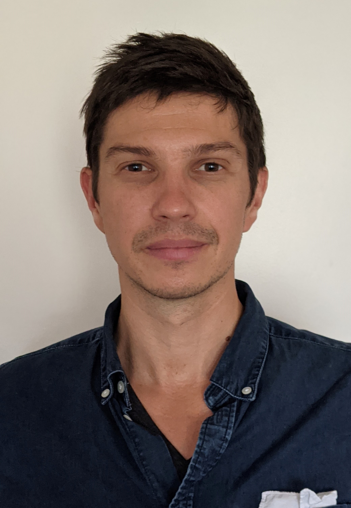

I am an academic philosopher by training. In practice this means I'm a teacher, researcher, writer, speaker, and editor. I recently joined the Department of Philosophy, Classics, History of Art and Ideas at the University of Oslo as Associate Professor of Philosophy.
I did my PhD at Georgetown University, and my dissertation was titled Subordinating Speech and the Construction of Social Hierarchies. I did my MA at Carleton University, where I focused on labour exploitation and global justice.
It is from this background that I approach issues in AI ethics, addressing wide-ranging topics such as online hate speech, content moderation and recommendation, and the labour that powers automation—both real and fake.
Previously, I was Assistant Research Professor in the Notre Dame-IBM Technology Ethics Lab, part of the Institute for Ethics and the Common Good at the University of Notre Dame.
Before Notre Dame, I was with the Humanising Machine Intelligence project and Seth Lazar's Machine Intelligence and Normative Theory (MINT) Lab at the Australian National University. I also worked at the Rotman Institute of Philosophy at Western University as a Postdoctoral Associate, and the Institute for the Study of Human Flourishing at the University of Oklahoma as a Postdoctoral Fellow.
Most of my published work can be found on my PhilPeople page, my ResearchGate page, my Google Scholar page, or my academia.edu page (rip)—so many pages!
See my Research page for more about my work, my Talks page for upcoming and recent talks, and my Teaching page for more about my current and past courses.